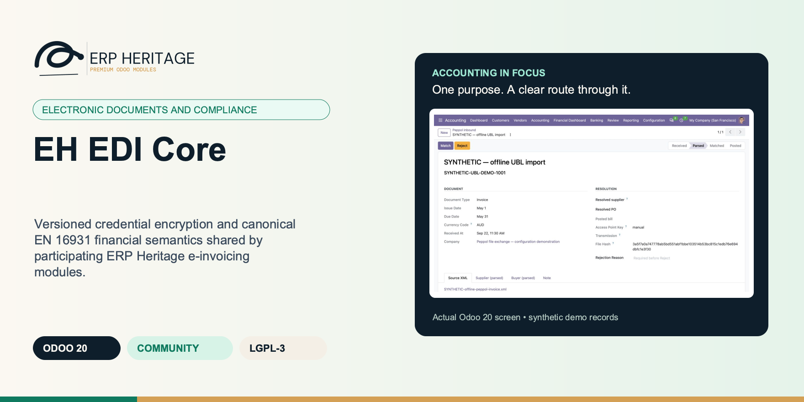
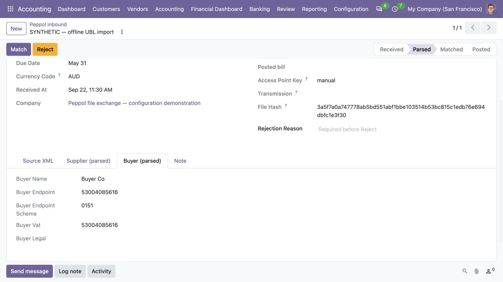

ERP HERITAGE / ODOO 20 COMMUNITY
EH EDI Core
Versioned credential encryption and canonical EN 16931 financial semantics shared by participating ERP Heritage e-invoicing modules.
LGPL-3 · Odoo 20 · v20.0.1.2.1 · Module guide, setup, workflows and rollout checks
The purpose
Make the next finance decision clearer.
Internal technical dependency for the ERP Heritage e-invoicing modules (Mauritius MRA, France PDP / PPF Factur-X, Peppol BIS Billing). It gives the e-invoicing line two shared foundations so each format module stays small, consistent, and audited in one place.
Inside Odoo 20
See the accounting workflow.
Captured from Odoo 20 Community using synthetic demonstration records. Configuration screens show the available workflow; external service connectivity still requires the relevant provider setup and validation.

Downstream Peppol consumer displays a parsed offline invoice. EH EDI Core is a technical dependency with no standalone operational screen; this is the consumer’s workflow.
Captured 2026-09-22 from isolated Odoo 20 Community after parsing the project’s synthetic UBL fixture through the actual manual-file inbound workflow. No Peppol network receipt, access-point request, transmission or certification is represented. Shown only to explain the downstream app context: this view is not an EDI Core interface or direct proof of its credential vault or outbound mapping.

Downstream Peppol supplier tab shows offline-parsed party identifiers. It illustrates a consuming app’s invoice workflow; EH EDI Core itself adds no supplier-review screen.
Captured 2026-09-22 from isolated Odoo 20 Community after parsing the project’s synthetic UBL fixture through the actual manual-file inbound workflow. No Peppol network receipt, access-point request, transmission or certification is represented. EH EDI Core is installed as a technical foundation. The pictured inbound parser and review form belong to Peppol, not to the dependency.

Downstream Peppol buyer tab presents identifiers from the synthetic UBL fixture. This consumer context accompanies the shared EDI dependency, which has no separate menu or UI.
Captured 2026-09-22 from isolated Odoo 20 Community after parsing the project’s synthetic UBL fixture through the actual manual-file inbound workflow. No Peppol network receipt, access-point request, transmission or certification is represented. This is a downstream consumer screenshot, not evidence of EDI Core network transport, certification or a standalone interface.
Inside this module
Built around the work your team does.
Crypto and common mapping, written once
Credential encryption and common EN 16931 financial semantics live in one audited dependency. Participating format modules reuse them and add only their jurisdiction or transport evidence.
Authenticated encryption with key identity
AES-256-GCM ciphertext carries a format version and key id. Historic keyrings preserve existing data while controlled rotation re-encrypts it under the current key.
One financial model, format-specific evidence
Shared adapters carry legal parties, net prices, stable unit codes, booked taxes, totals, and references. Peppol and Factur-X consumers retain their own profile identifiers and serialization rules.
KEY ROTATION
Key identity is authenticated inside ciphertext. Unknown versions and missing historic keys fail closed; controlled rotation preserves associated-data binding.
TAMPER DETECTION
Tampered, truncated, wrong-key, or non-base64 ciphertext raises a vault error instead of returning corrupt plaintext.
CROSS-VERSION LINES
Product invoice lines are mapped; section and note rows are excluded. Legacy rows without a display marker are supported.
MONETARY PROOF
Discounted and tax-included prices tie BT-146 to posted line net; booked tax buckets and monetary identities fail closed on unexplained drift.
Versioned AES-256-GCM credential vault
New ciphertext records a format version and key id; legacy ciphertext remains readable, historic keyrings support rotation, and unresolved keys fail closed.
From input to outcome
Follow the complete workflow.
Prepare the business inputs
Identify the consuming e-invoicing addon and prepare the documented key source and namespace before storing credentials. Gather invoice semantics, tax categories, financial totals, consuming module namespace and encryption key configuration. Use a representative case with a known expected result so the team can separate configuration decisions from unexpected behaviour. Keep the supporting commercial or accounting evidence available during review.
Run the supported operation
Map a representative invoice to the canonical structure and check the financial and party semantics used by the downstream format. Follow the record’s available actions in the order intended by the workflow. Review the selected company, relevant dates and any validation messages before continuing. If the source data changes, reassess the result against the updated evidence.
Worked operating scenario
A new format module binds a stable vault namespace, then consumes canonical EN 16931 financial semantics. Versioned ciphertext supports key rotation; mapper output carries legal parties, net prices, stable unit codes, booked taxes and totals. Format code adds its own participant identifiers, jurisdiction rules, serialization and transport evidence without duplicating common accounting logic.
Review the result in context
Exercise supported credential reading and rotation in a safe environment, retaining the required historic key configuration for existing ciphertext. Compare the outcome with the expected treatment for this case and record the reason for any difference that requires follow-up. Give exceptions an owner so they do not disappear inside a period-end spreadsheet.
Make the process repeatable
Keep keys, backups and rotation ownership in the deployment runbook; this dependency is infrastructure and does not itself provide an access point or tax submission service. Include the accepted operating example, configuration choices and unresolved dependencies in the handover. Review them when business policy, source data or the surrounding Odoo applications change.
Business situations
Where this module fits.
Focused operational adoption
EH EDI Core is relevant to e-invoicing integration administrators and implementers who need to answer this question: Can format-specific e-invoicing modules share one invoice representation and a controlled credential-storage foundation? Start with the process that creates the decision, identify its owner and agree what evidence the reviewer needs. A narrow pilot helps the team evaluate the supported workflow using its own accounting data before broadening access.
A reviewed period-end handover
Use the module’s electronic documents and compliance role as one part of a controlled close. Bring the relevant invoice semantics, tax categories, financial totals, consuming module namespace and encryption key configuration to the review, then explain the result alongside the business event it represents. Establish which outputs become part of the reporting pack and which outstanding matters need a separate accounting decision.
A clear implementation acceptance case
Turn the business question into an acceptance case: Can format-specific e-invoicing modules share one invoice representation and a controlled credential-storage foundation? Use one ordinary example and one relevant exception from the supported scope below. Ask the intended operator to prepare it and the reviewer to explain the result. Retain that accepted example with the deployment notes so future changes can be assessed against an understood process.
Before the first result
Prepare a clean, reviewable starting point.
Agree scope before configuration
Confirm that the organisation needs the supported electronic documents and compliance process described here. Identify the responsible e-invoicing integration administrators and implementers and write down the decision they expect the module to support. Use the limitations section to separate shipped behaviour from an integration, professional judgement or operational service that needs another owner.
Bring the required data
Prepare invoice semantics, tax categories, financial totals, consuming module namespace and encryption key configuration. Check the relevant records in the intended company and use dates that match the business event. Resolve missing accounting configuration before evaluating calculated output; plausible-looking totals do not establish that the chosen inputs or policies are correct.
Check the installed foundations
This module declares the standard Odoo modules declared in its manifest as part of its installation foundation. Its direct standard-Odoo dependencies are base. Review the actual dependency set in the target database before a rollout, especially where another addon also extends the same accounting models, menus or posting actions.
Set up an owned review routine
Define who operates EH EDI Core, who reviews unusual results and who maintains configuration. Run the representative workflow below in a test database using the intended users. Confirm that users can reach the work they own and that the reviewer understands the available evidence before moving the process into live operation.
Workflow reference
Understand the records and controls.
Capability detail 1
AES-256-GCM credential vault. One audited authenticated-encryption implementation, parametrised per module by a key namespace, so API secrets for each tax authority or access point are encrypted once instead of a copy of the crypto per module. New ciphertext carries a format version and key id; configured historic keys keep legacy data readable and credential rotation re-encrypts it under the current key. The master key resolves from one of three sources in order (environment variable, a 0600 key file, or a system config parameter), and the vault refuses to operate when no master key resolves. A master-key file with group or other permissions is rejected outright (chmod 0600 required), the config-parameter source emits one least-secure warning, and tampered, truncated, wrong-key, unknown-version, or non-base64 ciphertext raises a vault error rather than returning garbage. Empty or unset credential fields pass through cleanly so they never raise.
Capability detail 2
Canonical EN16931 invoice model and journal entry mapper. One mapper reads common financial semantics from journal entry into a BT-code-annotated model: legal parties, lines, booked document-currency tax breakdown, totals and references. Format adapters consume that model, then add only jurisdiction or transport evidence such as validated participant identifiers and payment routing. Product-line detection works across Odoo versions, unit codes use Odoo's stable UN/ECE resolver, credit notes map to the correct document type, and optional cross-module fields are read defensively.
Capability detail 3
Not an end-user application. No user interface, no menu, no configuration of its own. Installed automatically as a dependency of the e-invoicing modules. Free and licensed LGPL-3.
Canonical EN 16931 financial model
BT-code-annotated parties, net and gross item prices, stable UN/ECE units, booked tax subtotals, monetary totals, and explicit references.
Truthful journal entry mapping
Commercial buyer identity, document-currency taxes, prepayment, payable rounding and tax-currency amounts are derived from ledger evidence; unsupported document adjustments fail closed.
CII and UBL adapters
Participating serializers consume common semantics while retaining format-specific party identifiers, payment routing, validation, and transport evidence.
Keep credentials readable through an approved rotation
Illustrative implementation exercise. An integration administrator prepares the key source used by a consuming e-invoicing module. Confirm the supported namespace and key configuration before storing credentials, and retain the historic keys needed to read existing versioned ciphertext. Key rotation is an operational process with backup and ownership requirements, not a reason to expose secrets in user-visible records. Separately map a representative invoice and review its canonical parties, taxes and totals before the consuming format serialises it. Include a relevant rounding, prepayment or currency case in the downstream document test. The core provides shared semantics and credential services; the actual document format, validator and network transport remain responsibilities of the consuming modules.
Understand the shared document boundary
Electronic invoice formats use different structures and transport arrangements, but they need a consistent account of the underlying commercial invoice. The canonical model carries common party, line, tax and monetary semantics so participating format modules do not independently reinterpret the same ledger. Review a representative invoice at that boundary before inspecting its final XML. A correct total alone does not establish that legal identity, tax category, prepayment or rounding were mapped as intended. The consuming format module remains responsible for the final serialisation, its format-specific validation and document workflow. EH EDI Core supplies shared inputs to that process; it does not generate every national invoice format or transmit documents by itself.
Treat encryption keys as operational dependencies
Encrypted credentials require a working key source when they are stored and later read. The vault’s supported configuration is therefore part of deployment readiness, backup planning and incident recovery. Assign ownership for the configured key namespace and the historic keys needed by existing versioned ciphertext. Where a key file is used, its required permissions are part of the documented setup. A database backup without the necessary separately managed key material is not an adequate plan for recovering protected integration credentials. Review restoration in an appropriate non-production environment without exposing secrets in screenshots or support notes. The accounting listing describes the vault boundary; your deployment team must implement its operational key-management process.
Review rotation without confusing it with deletion
A key rotation introduces a current key identity while existing ciphertext may still require configured historic keys. Use the supported rotation process and verify that the relevant consuming module can read its credentials afterward. Removing an old key before the corresponding data has been handled can make legitimate credentials unreadable. Keep the approved rotation record and recovery plan under the deployment owner’s control. The vault rejects malformed or tampered data rather than guessing a credential. Such a failure should lead to an investigation of configuration and evidence, not copying plaintext secrets into an unrelated field to bypass the protected path.
Test the downstream financial meaning
Include representative discounts, tax treatments, rounding and currency cases when accepting a consuming e-invoicing module. The shared mapper should provide the expected semantics, while the format’s validator should explain any unsupported document condition. Test the final document in the actual downstream workflow rather than assuming that a successful canonical mapping establishes network acceptance. This is particularly important where a jurisdiction needs format-specific party identifiers or payment information beyond the common model. The technical dependency has no separate end-user menu; operators normally encounter its effects through the e-invoicing application that uses it.
Questions before rollout
Answers your finance team needs.
Who is this module designed for?
It is designed for e-invoicing integration administrators and implementers. Its central business question is: Can format-specific e-invoicing modules share one invoice representation and a controlled credential-storage foundation? The listing describes the shipped operating scope and the decisions that remain with the organisation. Evaluate it against your own records and review process, rather than treating the module name as a promise to cover every scenario in that accounting area.
What should be ready before the first run?
Have invoice semantics, tax categories, financial totals, consuming module namespace and encryption key configuration ready, together with the person who owns the related accounting policy. Identify the consuming e-invoicing addon and prepare the documented key source and namespace before storing credentials. A known example makes it possible to check the result and resolve configuration questions before the process is repeated across more records or companies.
What should a reviewer inspect?
Exercise supported credential reading and rotation in a safe environment, retaining the required historic key configuration for existing ciphertext. Keep the relevant source evidence with the output and be explicit about company, date and policy choices. The most useful review asks whether the result follows from the business inputs, not only whether the operation completed without a validation message.
How does this fit into the accounting suite?
It belongs to the electronic documents and compliance family. Its declared custom dependency foundation is the standard Odoo modules declared in its manifest. Installing the complete suite also brings other operating and specialist modules; using this focused module should be evaluated against its own dependency list and scope. Optional services still need their own configuration and agreement where applicable.
What is the most important scope boundary?
This is a technical dependency, not an end-user application. It has no user interface, no menu, and no configuration of its own, and is installed automatically with the e-invoicing modules that need it. Keep keys, backups and rotation ownership in the deployment runbook; this dependency is infrastructure and does not itself provide an access point or tax submission service.
Does installing it validate our accounting policy?
No. EH EDI Core provides the specific records, calculations or workflow described in this listing. The organisation remains responsible for its source information, accounting choices, supporting evidence and review. Where the process uses an estimate, a contract assessment or an external service, appoint the appropriate owner before relying on the output.
Scope and requirements
Know exactly what you are installing.
This is a technical dependency, not an end-user application. It has no user interface, no menu, and no configuration of its own, and is installed automatically with the e-invoicing modules that need it.
EH EDI Core emits no XML itself. The CII input adapter and UBL input adapter adapters build the input the serializers consume; the actual CII and UBL serialization lives in the consuming format modules (France CII, Peppol UBL).
The mapping is pinned by output-shape unit tests in this module. Byte-for-byte golden XML regression tests live in the consuming e-invoicing modules and lock their serialized output; a mapping change that alters a generated document surfaces in those modules' tests.
No silent fallback applies to credentials: a missing or invalid master key surfaces an explicit error. The mapper itself reads invoice fields defensively with safe defaults; the pre-flight that rejects unmappable EN16931 fields is enforced by the e-invoicing format modules' validators, not here.
Requires the Python cryptography library as an external dependency.
Standards references describe the accounting subject addressed by the module. They do not establish certification, statutory filing acceptance or suitability for every jurisdiction. Your finance team owns its assumptions, accounting policies and review.
Installation scope
Included dependencies, explained.
Odoo installs the following direct dependencies automatically. Additional dependencies can be brought in by those modules. Related modules in the wider catalogue are optional unless they appear in this dependency chain.
Base
Odoo Community dependency required by this module. Its own dependencies and configuration remain part of the installation scope.
Server packages declared by this module: python: cryptography.
Acceptance guide
Run a pilot your team can trust.
The following are recommended rollout checks, not claims of additional built-in features. Apply the checks relevant to this module and retain evidence of your own results.
Start with one complete business cycle
Select a recent, closed period that your finance team understands well. Keep its approved source documents, ledger totals and existing working papers available. Reproduce that period in a staging database before working on current transactions. A familiar period makes differences visible: you can distinguish an opening balance problem from a configuration choice, a timing difference or a genuine defect. Agree which person owns each discrepancy and what evidence will close it. Successful installation is the starting point; a repeatable business outcome is the acceptance criterion.
Define the result before choosing settings
Write down the output your team needs from this module: a reviewed transaction, an exported file, a reconciled balance, an approved schedule or an operational queue. Identify who prepares it, who reviews it and who relies on it next. Make the scope concrete with one company, one reporting period and a small representative document set. Include an ordinary case and an exception. This keeps the evaluation focused on the business decision instead of the number of available screens, and gives reviewers a consistent way to compare the new workflow with their current process.
Check the edition and dependency boundary
Use the Odoo 20 edition of the module and its dependencies together. The manifest defines what Odoo installs automatically; a feature mentioned elsewhere in the wider product family is not automatically included. Review the dependency guide on this page before enabling the complete suite, especially where your deployment also uses Sales, Purchase, Inventory or website components. Confirm that your hosting arrangement accepts custom server modules and their Python requirements. Keep a copy of the installed module versions with your acceptance record so a later update can be checked against the same baseline.
Prepare master data with finance owners
Check the companies, currencies, fiscal periods, journals, accounts and partner records used by your sample. Confirm that account purposes agree with your chart of accounts and that archived records are not being selected inadvertently. Review company-specific settings while the intended company is active. Where a workflow needs bank details, analytic dimensions, product information or payment terms, validate those inputs with their owner. Clean master data reduces repeated exceptions and makes it easier to investigate the exceptions that remain. Keep the preparation list short enough for someone else to repeat it.
Keep opening balances traceable
Decide which source establishes the opening position before introducing new transactions. Save the source date, company, currency and supporting reconciliation. If a module maintains a schedule or a working-paper balance alongside the ledger, document how that opening amount should tie to the general ledger. Do not use balancing entries to hide a difference during the pilot. Classify the difference, correct its source and rerun the comparison. The resulting trail is useful both for your internal reviewer and for support if an unexpected calculation needs investigation.
Assign preparation and review deliberately
Choose named users for preparation, review and administration. Confirm their practical access by signing in as those users in staging, rather than relying on an administrator's view of the menus. A visible menu does not replace model access or record restrictions, and a hidden menu does not by itself prove that data is protected. For your own acceptance check, verify the specific business operations each role needs. If your organization requires separation of duties, include that policy in the rollout criteria and check the actual workflow against it before granting production access.
Exercise company boundaries
Run the sample with the intended company selected, then repeat the relevant navigation and search checks as a user assigned to a different company. Record which company owns each source document and each generated result. For users who work across entities, confirm how their allowed-company selection affects totals and available records. Investigate any cross-company difference before it becomes a month-end problem. Group-level work and company-level work have different scopes; use the appropriate module and document the scope on the review evidence instead of assuming one screen represents both.
Use representative currencies and dates
Include a company-currency case and, where relevant to the module, a foreign-currency case. Check the date used to select exchange rates and keep the rate source available to the reviewer. Add a transaction near a period boundary so the team can see whether document date, accounting date or another business date drives the result. Test decimal precision with a small amount as well as a large one. Record the expected rounding treatment. These checks turn vague differences in totals into questions that can be resolved against your accounting policy.
Trace one result back to its source
Choose one result and follow the available links or record references back to the original business document. Compare its company, partner, amount, currency and dates with the expected source. Where the workflow creates a journal entry, inspect the accounts and balancing lines before relying on an aggregate report. Where it exports a file, compare the file's records with the selected batch. Save a small, intelligible evidence set instead of an indiscriminate screenshot archive. A reviewer should be able to explain what happened without needing the original preparer beside them.
Treat posting as a controlled milestone
If this module creates or updates accounting entries, separate preparation from the decision to post in your operating procedure. Inspect the proposed outcome, resolve missing configuration and confirm the intended period before using a posting action. If the module does not post entries, identify the equivalent commitment point, such as sending a file or approving a review record. Record who is allowed to make that decision. The page describes the module's supported workflow; your team still needs an operating policy that fits its accounting responsibilities and approval structure.
From pilot to production
Make the workflow repeatable.
Test correction, not only success
Use a deliberately incomplete sample in staging: a missing required setting, an unsuitable date or a source document that is not ready for the next step. Observe the actual message and the record state that remains. Correct the input and repeat the operation. Check that the recovered result agrees with the ordinary successful case. For transactions already committed, use the supported correction or reversal workflow rather than editing database records. Your acceptance record should explain how staff recover from mistakes, because that is part of day-to-day usability, not an unusual administrative task.
Check repeated actions with a small sample
Repeat an import, calculation, preparation step or button action only where the documented workflow permits it. Confirm whether the expected behavior is a recalculation, a refusal, a new version or reuse of an existing record. Do not infer universal duplicate prevention from one successful test. Record the behavior of the actual operation your team will use and include it in staff guidance. A small, identifiable sample makes duplicate records easy to spot and avoids creating a misleading acceptance result from a large batch with poorly understood contents.
Review period locks before the first close
Where accounting dates are involved, inspect your company's lock settings and the role that can change them. Include one sample dated inside a closed period and one in the open period, then observe the supported behavior with normal finance access. Agree how the team will handle late documents and approved corrections. The goal is a clear route for legitimate work that preserves the reason the period was closed. Record the policy alongside the module's workflow so operators know when to stop and involve the person responsible for the close.
Validate exports with their recipient
If the module produces reports or exchange files, have the intended recipient inspect a sample. For a finance report, check the filters, company, dates, currency, labels and totals. For a bank or service file, use that recipient's own validation or test process before a production submission. Generating a structurally valid file does not establish acceptance by every provider. Keep the exact sample and any recipient feedback with the rollout record. Where no export is provided, agree which supported screen or linked record serves as the handover evidence.
Separate optional services from core work
Identify any step that depends on a separately configured provider, connector, credential or commercial service. Confirm the exact adapter and its requirements before scheduling a live demonstration. Some family modules provide deterministic rules or file preparation without a live external connection; their usefulness should be evaluated on that basis. Test a provider failure in staging only when the adapter offers a safe test route. Make it clear who manages credentials and provider subscriptions, and who should be contacted when an external service is unavailable.
Measure a realistic working session
Time the operations your staff will actually repeat, using a dataset that resembles your expected company, date range and document volume. Record the environment and sample size beside the timings. Include navigation, filtering, preparation and review rather than quoting a single best-case page load. This page makes no universal performance promise: network latency, database size, customizations and infrastructure affect results. Use measurements to choose a practical rollout batch size and to identify any operation that needs investigation before more users join the workflow.
Train through examples with expected outcomes
Give staff a short exercise that begins with a business situation and ends with a reviewed result. Include the expected amount or state, the navigation route, the point at which a reviewer becomes involved and the supported correction route. Let operators explain why their result is correct. Add only the settings and exceptions relevant to their role. A concise internal playbook built from your own pilot is easier to maintain than a large collection of unannotated screenshots, and it helps new users understand the relationship between this module and the rest of Accounting.
Make support requests reproducible
Capture the module version, Odoo version, affected company, operation, exact message and a minimal sequence of steps. Use redacted sample documents when sharing evidence outside your organization. State the expected result and the actual result separately. Include the date filters and role used, because the same record can look different with another scope or set of permissions. Never include passwords, API tokens or private keys in a support message. Good reproduction details allow the problem to be investigated without guessing at your business setup or asking staff to repeat a full close.
Rehearse an upgrade on a copy
Before deploying an update, back up the database and filestore together, and restore that backup into an isolated environment. Apply the module update there, then repeat the key pilot scenarios using the saved acceptance record. Check that existing documents remain readable and that the expected actions and menus still lead to the right workflow. Include one newly created record as well as an older one. Keep a rollback plan appropriate to your deployment and confirm that the backup can be restored before scheduling the production change.
Define a small release decision
Agree the release criteria before the pilot ends: expected financial results, access boundaries, supported corrections, output acceptance and owner sign-off. List unresolved items with their business impact instead of treating every observation as a blocker or dismissing it as cosmetic. Start production with a manageable scope and a named reviewer. Keep the first cycle's evidence so that later enhancements can be assessed against a concrete baseline. App-store descriptions help you select and understand the module; acceptance in your own configuration establishes whether the workflow is ready for your team.
Connected capabilities
Choose the next capability with context.
These related modules explain how this workflow connects to the wider accounting process. Only the dependencies declared above are installed automatically. Choose optional additions for a specific business need.
Peppol eInvoicing
Peppol eInvoicing renders a posted journal entry into a Peppol BIS Billing 3.0 (UBL 2.1) Invoice or CreditNote XML, and ships the inbound side as well: a UBL parser and a bill-intake workflow that moves a received document through parsed, matched and posted to create the vendor bill.
AU BAS Reporting
Australian BAS is an optional country app built on the ERP Heritage accounting suite. Installing this app installs the global suite and adds the Australian reporting workflow. Installing the global suite alone does not install BAS. The Business Activity Statement is the quarterly tax report Australian businesses lodge with the ATO. This module produces the figures the operator transfers onto the form and keeps a frozen, auditable record of each lodgement, on Odoo 20 Community.
Odoo 20 Community Accounting Pro
ERP Heritage Community Accounting Pro installs a fixed collection of 50 direct accounting dependencies. Together with the suite itself and the transitive EH EDI Core foundation, its custom-module closure contains 52 modules. The collection brings reporting, reconciliation, payments, receivables, approvals, specialist accounting, group work and close controls into one Community installation. Its value comes from connecting those processes and their evidence; adoption still requires deliberate company configuration, accounting ownership and review. Australian BAS is available separately and installs the suite as its accounting foundation.
Plan the surrounding workflow
Companion playbooks, with scope made explicit.
The following playbooks explain adjacent work in named companion modules. They are included here to help you plan the handoff around this module. Each companion is labelled as an installed dependency or an optional addition. These capabilities belong to that named companion, not to the standalone module you are reading about.
Optional companion; requires separate installation
Peppol eInvoicing
Send and receive Peppol BIS Billing 3.0 invoices on Odoo 20 Community, with a real UBL 2.1 generator, an inbound bill workflow, and pre-flight validation that catches errors before the access point does.
A real generator and a real parser
Outbound emits the actual OASIS UBL 2.1 namespaces and the Invoice-2 and CreditNote-2 roots. Inbound is a parser plus a received to parsed to matched to posted state machine that creates the vendor bill. Not field names that sound like Peppol, the actual document mechanisms.
Caught before the access point
Every payload is checked against the high-frequency Peppol and EN 16931 invariants (mandatory elements, single currency, totals reconciled within 1 cent) before download, and a failure names the rule. Participant identifiers are checksum-validated so an invalid ABN or GLN bounces with a precise message, not a rejection hours later.
Yours to keep, yours to wire
LGPL-3 source on disk, no activation key, no phone-home. Transport is bring-your-own through a published adapter contract, and the journal entry payload builder is split into override methods so a localisation can enrich party identification and per-line tax mapping without forking the module.
CANONICAL OUTBOUND
Shared EN 16931 semantics supply legal buyer, net prices, stable unit codes, booked taxes, rounding, prepayment and payable totals. Peppol adds validated participant identifiers and transport evidence.
CURRENCY PROOF
Document-currency amounts must agree. A separately declared tax accounting currency is accepted only for its exact top-level TaxTotal; every other mixed-currency amount fails pre-flight.
INBOUND CONTROL
Inbound bills remain manager-gated. Polling parses but never auto-posts; ambiguous suppliers and unsupported financial adjustments route to explicit exceptions.
IMMUTABLE EVIDENCE
Exact submitted UBL bytes, digest, endpoint identity and status are pinned before transport. Duplicate business documents and ambiguous transport outcomes fail closed.
Outbound UBL 2.1 generator
One button on a posted customer invoice or credit note renders a Peppol BIS Billing 3.0 document using the official OASIS UBL 2.1 namespaces and Invoice-2 / CreditNote-2 roots, with UN/ECE rec-20 unit codes in the unitCode attribute.
Review this companion’s own setup and scope before connecting the workflows. Keep the company, reporting date and business document references consistent at the handoff.
Optional companion; requires separate installation
Vendor Bill Automation
Intake every vendor bill, run a genuine three-way match against the PO and goods receipt, and let a manager post the clean ones in one batch.
A real three-way match
Not field names that sound like a match. Each line is matched to its PO line, the received quantity is read from done stock moves, and price is compared in the bill currency after FX conversion. Over-receipt is flagged distinctly from a quantity mismatch.
Posting stays with a human
Matched-within-tolerance intakes are flagged ready to post; an accounting manager posts them, alone or as a selected batch, in one action. Posting is never automatic, and it re-checks duplicates at post time.
Yours to keep
LGPL-3 source on disk. The shipped regex parser makes no remote calls. The extractor interface is pluggable, so a partner OCR or line extractor can register without forking the suite. Free today, free at renewal, because there is no renewal.
FX . MULTI-CURRENCY
A bill raised in a different currency than the PO does not flag every line as a price exception. The PO unit price is converted into the bill currency at the bill date before the price-tolerance check runs.
TOLERANCE
A price line is only flagged when both the per-unit percent tolerance and the absolute line-amount tolerance are breached, so a trivial penny mismatch never blocks an otherwise clean bill from posting.
RECEIVING
Invoiced quantity that exceeds the ordered PO quantity beyond the over-receipt percent is flagged distinctly as over-received, separate from a quantity-versus-received shortfall, so the two cases are never conflated.
DUPLICATES
A duplicate block can only be cleared by an accounting manager with a written reason, the override is posted to chatter, and posting re-runs the duplicate check at post time, not only at match time.
EMAIL SAFETY
When more than one partner matches the sender address, the intake is created with no vendor rather than guessing, because a wrong vendor attribution on a bill is higher risk than the convenience of an auto-fill.
Review this companion’s own setup and scope before connecting the workflows. Keep the company, reporting date and business document references consistent at the handoff.
Optional companion; requires separate installation
Accounting Suite Base
The shared reporting engine under the ERP Heritage accounting modules: an append-only render audit log, precise per-company cache invalidation, and a whitelist-only parameterised SQL builder.
Every render is on the record
Each report run writes an append-only execution row: the user, the timestamp, the full options snapshot, the runtime, and a SHA-256 result hash for XLSX and PDF. Re-run the same options against an unchanged ledger and the figures reproduce exactly. Even a cache hit writes its own row, and a failed render is recorded as an error, not lost.
Cache that knows when to expire
A per-company move-version counter bumps atomically on every journal entry state change. A cache hit therefore means nothing has posted, drafted, or cancelled since the payload was built. The counter is a single SQL UPDATE that adds one, so it is correct under concurrency, and it invalidates only the companies that actually changed.
SQL with no room for injection
The reporting hot path runs through a parameterised, analytic-aware SQL builder. Every value binds as a parameter, every identifier comes from a fixed whitelist, and every query is company-scoped, so there is no raw interpolation and no cross-company leakage. It is plain Python you can unit-test without spinning up the Odoo registry.
IDEMPOTENCY
A write that includes state in the values but does not actually change it (a routine recompute) does not spuriously bump the move-version counter or invalidate the cache. The override snapshots the prior state per record and bumps only the ids where the state genuinely transitioned.
DIRECT POST
A move created already in state posted, bypassing posting action entirely, still invalidates the cache. The create override filters posted moves and bumps their companies' counters, so a back-dated or scripted insert cannot leave a stale report standing.
COMPANY SCOPE
A render for companies [1,2] is never served a payload computed for [1] alone. The cache keys on a sorted-comma company set for exact equality, not an IN match that would treat overlapping sets as a hit, so a wider scope can never collide with a narrower cached one.
FULL TRAIL
A cache hit still writes its own audit row pointing back at the source execution, so the compliance trail records every render, not just the first. You can prove how many times a figure was produced and from which cached source.
CONCURRENCY
The per-company counter uses UPDATE col = col + 1 rather than a read-then-write, so two posts landing at the same instant both count and neither is lost, and only the affected company rows are invalidated.
Review this companion’s own setup and scope before connecting the workflows. Keep the company, reporting date and business document references consistent at the handoff.
Optional companion; requires separate installation
Accounting Setup Guide
A first-install onboarding checklist that turns the suite's strict configuration errors into a guided, per-company setup with deep links.
Errors become a checklist
The suite's strict configuration errors are reframed as 26 tasks across 7 categories. Each row tells the operator exactly what is left and opens the screen to fix it, instead of failing at first use.
Fail-loud, never silent
A task whose deep link external id is missing, unresolved, or not an Odoo action raises a clear error naming the exact id, never a random fallback. The completion ratio excludes skipped companies from its denominator and reports completed work among active outcomes.
Per-company by design
One progress line per task per company, with a unique constraint and a global isolation rule. A multi-company tenant sees the checklist once per company, with independent progress and no cross-company leakage.
SKIPPED EXCLUDED
Skipped companies remain visible in their own counter and are excluded from the completion-ratio denominator. The percentage therefore reports done versus still-to-do work without treating an explicit skip as either completion or pending work.
SEARCHABLE RELEVANCE
The Is relevant flag is fully searchable, not just displayable. A custom search method lets filters and group-by act on installed-module state, and raises a clear error on an unsupported operator instead of silently returning every row.
THREE FAILURE MODES
Open guards a missing action external id, an id that does not resolve, and an id that resolves to a non-action record. Valid actions pass through Odoo's canonical web-safe action serializer.
IDEMPOTENT SEEDING
Install-time and new-company seeding are both idempotent and bulk-create only missing lines. Adding a company mid-life, or reinstalling after adding a sibling module, never duplicates lines or wipes existing progress.
SCOPED KANBANS
The form's sibling kanban (same task, other companies) and peer kanban (same company, same category) both exclude the current record and respect scope, so an operator sees tenant progress and what is next without leaving the line.
Review this companion’s own setup and scope before connecting the workflows. Keep the company, reporting date and business document references consistent at the handoff.
ERP Heritage
Plan your first successful cycle.
Start with the workflow, setup and acceptance guide above. For implementation or support, share your Odoo version, module version, business scenario and a redacted example. Keep credentials and personal data out of support messages.
Published by ERP Heritage. Odoo is a trademark of Odoo S.A.; this independently developed application is not an Odoo S.A. product or endorsement.
Package: eh_edi_core · Release: v20.0.1.2.1 · License: LGPL-3.